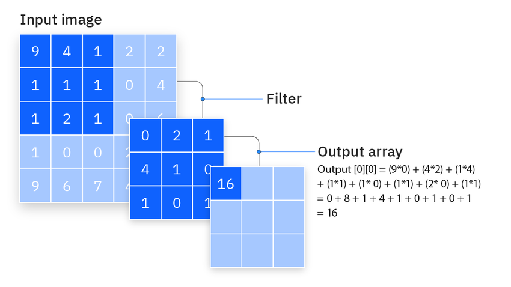
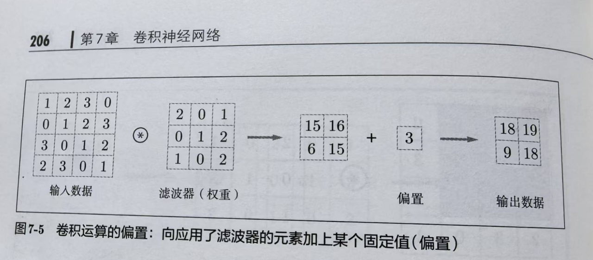
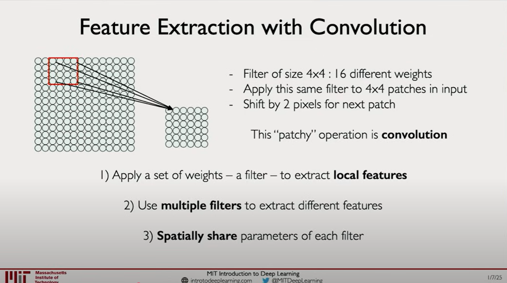
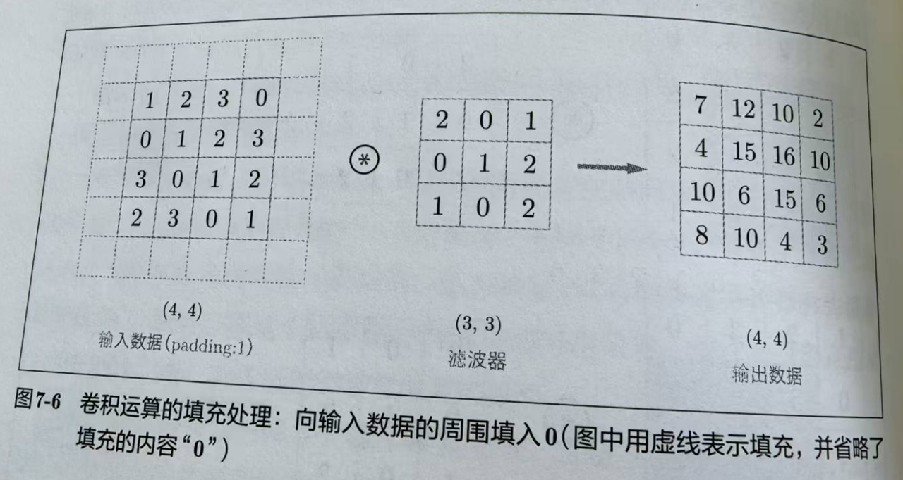
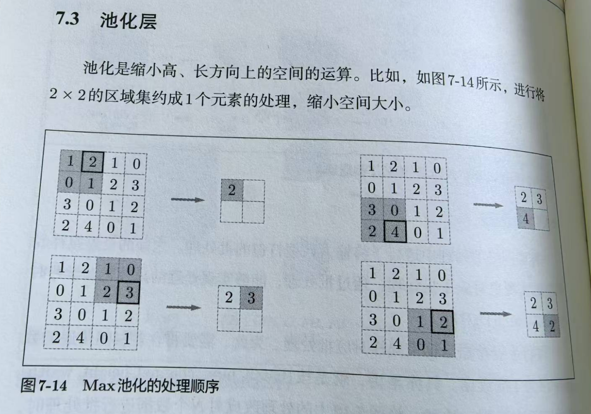
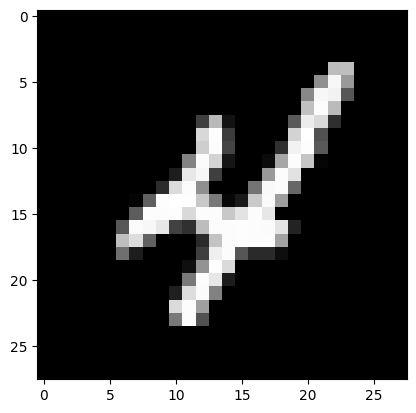
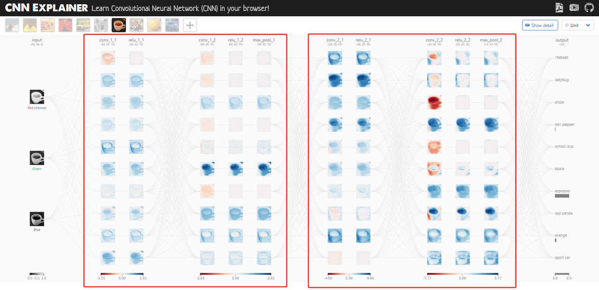
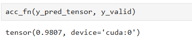

数字识别用传统的机器学习就可以做到蛮高的准确率，使用神经网络，完全也可以用全连接的网络来识别，无非是一个多分类的问题。和我们平时做多分类没有差别。这里我们用卷积神经网络（CNN）来做，CNN在图像识别上应用非常广泛。因为全连接神经网络的输入是一个向量，把图片按照行连接成一个向量，就会把空间信息给抹掉。这就是CNN要解决的，要利用空间信息，来找patterns，比如要识别一只鸟，图片中有一小块是一个鸟嘴，这对识别鸟是有用的。
CNN概述
CNN和全连接的神经网络的区别首先在在于它传递的数据是有形状的，也就是前面说的要利用空间信息，所以用sliding windows的策略，扫描一个又一个的窗口（patches），这个窗口每次扫描就用一个滤波器（filter）去做inner product，一个窗口出来是一个值。

这一个滤波器作用于这一个通道上，会出来另一个大小不一样的二维数据，所以输入输出有时候又可以统一称之为特征图。输入通常不是一个通道，比如说RGB的图，就有RGB三个通道，最终的输出是每一个通道都一样的做法，然后将多个通道进行加和。

滤波器主要用于提取图像的特征，比如下面这张图所演示的。

一个滤波器出来一张特征图，多个滤波器就会出来多个特征图，就像RGB的图有三个通道一样，用N个滤波器，出来的数据就有N个通道，每个通道是2D的数据，整个是一个3D的数据，我们依然可以理解成一张图，原来的图是3个通道，现在有N个通道了，不是我们理解的RGB图像，但形式上是一致的。这就是卷积的过程。

滤波器里的数值，相当于我们在全连接神经网络中权重，也会加上偏置，这些参数都是学习出来的。

一个典型的卷积神经网络就是卷积→激活→池化，可以是一个这样的过程，也可以连着搭几个。这个做为Feature learning，把图像的特征学出来，然后用这些特征做为输入，接一个全连接的神经网络（也被称之为dense network），这就是完整的CNN。
卷积层

运算就是前面讲到的相当于图像处理的滤波器运算。这里涉及到一些和运算细则有关的概念，包括kernel size, padding和stride，这些会影响到输出的数据形状大小，这也要算一下的，因为最终要过一下全连接层，输入的大小是要准确指定的。
滤波器（filter/kernel）
滤波器有时候也叫kernel，因为滤波器是不需要我们指定的，也是学出来的，我们要指定的只有滤波器的数量，也是输出的channel数目，还有滤波器的大小，kernel size。
填充（padding）
一个4x4的数据，用一个3x3的滤波器，输出的数据就变成了2x2，所以这样子，如果叠加卷积层，就有可能在中间变成1x1，后面没法再继续做卷积了。所以就需要在数据的边缘进行填充，像下面这个例子，通过填充就可以让输入和输出保持4x4的形状。

步幅（stride）
在应用滤波器时，通过移动窗口，把所有的数据都过一遍，窗口和窗口之间是有重叠的，移动窗口的步伐有多大，就是步幅。

池化
典型的CNN包括卷积→激活→池化，激活就是ReLU这些，都很清楚，最后就池化：

池化没有需要学习的参数，就是在目标区域里取个代表性的值，上图是最大值，也可以是平均值。池化是在每个通道单独进行，所以不会改变通道数。
输入数据发生一点微小的变化，通过池化，输出基本上是不变的，这样就具有一定的鲁棒性。当然其实池化最主要的作用是让数据变小，这本身是为了更高效的计算。从这个角度来说，计算资源够的情况下，是可以不需要池化的。
书上讲的都是说让数据变小这一点，我自己想到的是，因为卷积运算可以套好几个，那么经过池化之后，再做同样大小的滤波运算，相当于在更大的区域去捕获特征了。我认为是有这个作用的，相当于前面是低空看细节，后面高空看轮廓，有这样一个过程的作用。
另外也要看实际情况，对于一般的图像处理来说，池化的过程，相当于压缩了图片，压缩完图片看着变化不大。AlphaGO就使用了CNN，但是它就没有用池化，因为池化了之后，棋盘就不完整了，这和图像处理是有区别的，所以它不能够用池化。所以说，还得具体情况具体分析。
PyTorch实战
数据
这里使用的是MNIST手写数字的数据集，有6万张图片。先创建文件夹，然后下载，如果文件已经存在，就跳过下载。
from pathlib import Path
import requests
DATA_PATH = Path("data")
PATH = DATA_PATH / "mnist"
PATH.mkdir(parents=True, exist_ok=True)
URL = "https://github.com/pytorch/tutorials/raw/main/_static/"
FILENAME = "mnist.pkl.gz"
if not (PATH / FILENAME).exists():
content = requests.get(URL + FILENAME).content
(PATH / FILENAME).open("wb").write(content)这个数据是个pickle文件，存的是numpy array格式，我们相应地把它解压缩，讲进来。
import pickle
import gzip
with gzip.open((PATH / FILENAME).as_posix(), "rb") as f:
((x_train, y_train), (x_valid, y_valid), _) = pickle.load(f, encoding="latin-1")总共有6万张图片，5万张是训练集，1万张做为验证/测试集。
图片是28x28像素的，已经被打成长度为784的一维向量。
我们可以随便选一张画出来看看：
from matplotlib import pyplot as plt
import numpy as np
plt.imshow(x_train[9].reshape((28,28)), cmap='gray')
NumPy to Tensor
因为是numpy array格式，我们需要转换成tensor。
import torch
x_train, y_train, x_valid, y_valid = map(
torch.tensor, (x_train, y_train, x_valid, y_valid)
)DataLoader
from torch.utils.data import TensorDataset
from torch.utils.data import DataLoader
bs = 64
train_ds = TensorDataset(x_train, y_train)
train_dl = DataLoader(train_ds, batch_size=bs)
valid_ds = TensorDataset(x_valid, y_valid)
valid_dl = DataLoader(valid_ds, batch_size=bs * 2)我们使用TensorDataSet来存这些数据，同时存samples和labels，再用DataLoader来方便我们访问和迭代这些数据，其中一个参数是batch_size，也就是批处理的大小，指定一次有多少个数据打包喂给神经网络。
模型
首先是看看有没有GPU，有则设备设为’cuda’，没有就设为’cpu’。我们的运算都在指定的device上进行。
device = torch.device('cuda' if torch.cuda.is_available() else 'cpu')训练步骤
训练的代码都基本一样，我们把它写成一个函数，方便调用。
def train_step(model: torch.nn.Module,
data_loader,
loss_fn,
optimizer,
acc_fn,
device = device):
train_loss, train_acc = 0, 0
for batch, (X, y) in enumerate(data_loader):
X, y = X.to(device), y.to(device)
model.train()
y_pred = model(X)
loss = loss_fn(y_pred, y)
train_loss += loss
train_acc += acc_fn(y_pred, y)
optimizer.zero_grad()
loss.backward()
optimizer.step()
train_loss /= len(data_loader)
train_acc /= len(data_loader)
print(f"Train loss: {train_loss:.5f} | Train accuracy: {train_acc:.2f}")测试步骤
测试步骤也是同样的道理，也写成函数：
def test_step(model,
data_loader,
loss_fn,
acc_fn,
device = device):
test_loss, test_acc=0, 0
model.eval()
with torch.inference_mode():
for X, y in data_loader:
X, y = X.to(device), y.to(device)
test_pred = model(X)
test_loss += loss_fn(test_pred, y)
test_acc += acc_fn(test_pred.argmax(dim=1), y)
test_loss /= len(data_loader)
test_acc /= len(data_loader)
print(f"Test loss: {test_loss:.5f} | Test accuracy: {test_acc:.2f}\n")CNN模型
我们用https://poloclub.github.io/cnn-explainer/里的CNN架构，包含两个结构一样的blocks。

这个架构是有名的VGG的简化版本，TinyVGG:

from torch import nn
class MNIST(nn.Module):
def __init__(self, input_shape, hidden_units, output_shape):
super().__init__()
self.block_1 = nn.Sequential(
nn.Unflatten(1, (1, 28, 28)),
nn.Conv2d(
in_channels = input_shape,
out_channels = hidden_units,
kernel_size = 3,
stride=1,
padding=1),
nn.ReLU(),
nn.Conv2d(
hidden_units, hidden_units, 3, stride=1, padding=1),
nn.ReLU(),
nn.MaxPool2d(kernel_size=2,
stride=2)
)
self.block_2 = nn.Sequential(
nn.Conv2d(hidden_units, hidden_units, 3, padding=1),
nn.ReLU(),
nn.Conv2d(hidden_units, hidden_units, 3, padding=1),
nn.ReLU(),
nn.MaxPool2d(kernel_size=2, stride=2)
)
self.classifier = nn.Sequential(
nn.Flatten(),
nn.Linear(in_features=hidden_units*7*7,
out_features=output_shape)
)
def forward(self, x):
return self.classifier(self.block_2(self.block_1(x)))两个blocks都是Conv2d→ReLU→Conv2d→ReLU→MaxPool2d。参数前面都有解析过相应的概念了，这里需要讲的是在block_1里用了nn.Unflatten，是因为原来的数据28x28像素已经被转成一维向量了，所以此处需要搞回2维的数据。然后这里的卷积运算，用的kernel_size=3，stride=1，padding=1，这样子数据的形状大小是不变的；再通过MaxPool2d的时候，kernel_size=2, stride=2，所以一个2x2的数据就变成了1个数，数据就从28x28，变成了14x14。有两个blocks，过了两次MaxPooling，最终就变成了7x7，所以最后给nn.Linear的数据，就是7x7xhidden_units（也就是最后数据的通道数）。
训练模型
先初始化一个模型，input_shape就是传给卷积层的通道数，这里是灰度图，所以只有一个通道，hidden_units就是中间的通道数，而output_shape就是最后过全连接神经网络的输出，因为是0-9的数据，所以是10个分类。
torch.manual_seed(42)
model = MNIST(input_shape=1, hidden_units=10, output_shape=10).to(device)还有相应的损失函数和优化器等：
from torchmetrics.classification import Accuracy
acc_fn = Accuracy(task="multiclass", num_classes=10).to(device)
loss_fn = nn.CrossEntropyLoss()
optimizer = torch.optim.SGD(params=model.parameters(),
lr=0.1)万事俱备，我们就可以开始训练了，有了前面训练步骤和测试步骤两个函数，就是把这些模型、损失函数、准确率函数和优化器给传进去就可以了。换一个模型和相应的这些函数，再传进去，就变成了训练另一个模型。
from timeit import default_timer as timer
start_time = timer()
epochs = 3
for epoch in range(epochs):
print(f"Epoch: {epoch}\n---")
train_step(model=model,
data_loader=train_dl,
loss_fn=loss_fn,
optimizer=optimizer,
acc_fn=acc_fn)
test_step(model=model,
data_loader=valid_dl,
loss_fn=loss_fn,
acc_fn=acc_fn)
end_time = timer()
准确率达到了98%，6万张图片过了3遍，只用了17秒。
评估
y_preds = []
model.eval()
with torch.inference_mode():
for X, y in valid_dl:
X, y = X.to(device), y.to(device)
y_logit = model(X)
y_pred = torch.softmax(y_logit, dim=1).argmax(dim=1)
y_preds.append(y_pred.cpu())
y_pred_tensor = torch.cat(y_preds)把验证数据集传给模型，把预测的结果拿到。我们就可以用前面定义的acc_fn来算一下准确率。

和前面那个测试步骤最后的准确率是一样的，因为我们这里用的同一个数据集，也就是说这个数据集，既拿来测试，又拿来验证。一般情况下，我们可以把数据分成3个数据集，一个训练，一个验证，一个测试。因为这个下载的MNIST数据，本身就是分两块的，懒得再去切分它，就先这样用了。
单纯一个准确率，是不清楚那些分类做得不好的，我们可以用混淆矩阵来看一下。
from torchmetrics import ConfusionMatrix
confmat = ConfusionMatrix(num_classes=10, task='multiclass')
confmat_tensor = confmat(preds=y_pred_tensor, target=y_valid)这个代码就计算出了混淆矩阵，我们再画个图来看：
from mlxtend.plotting import plot_confusion_matrix
fig, ax = plot_confusion_matrix(
conf_mat = confmat_tensor.numpy(),
class_names = range(10)
)